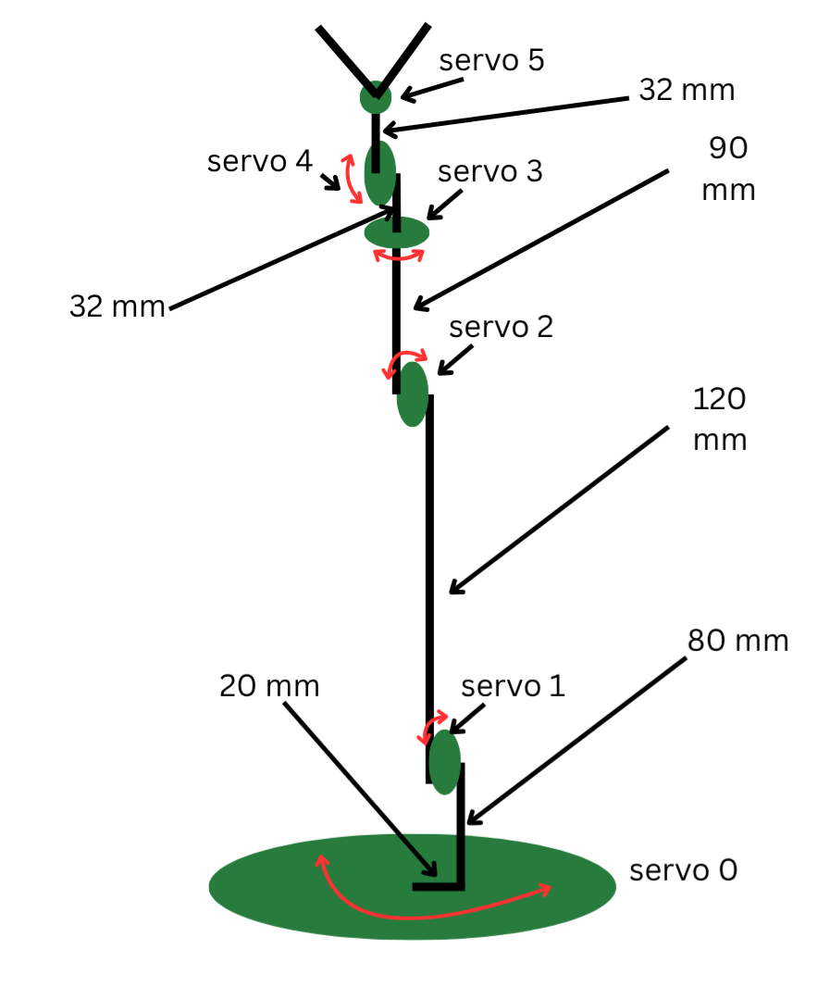
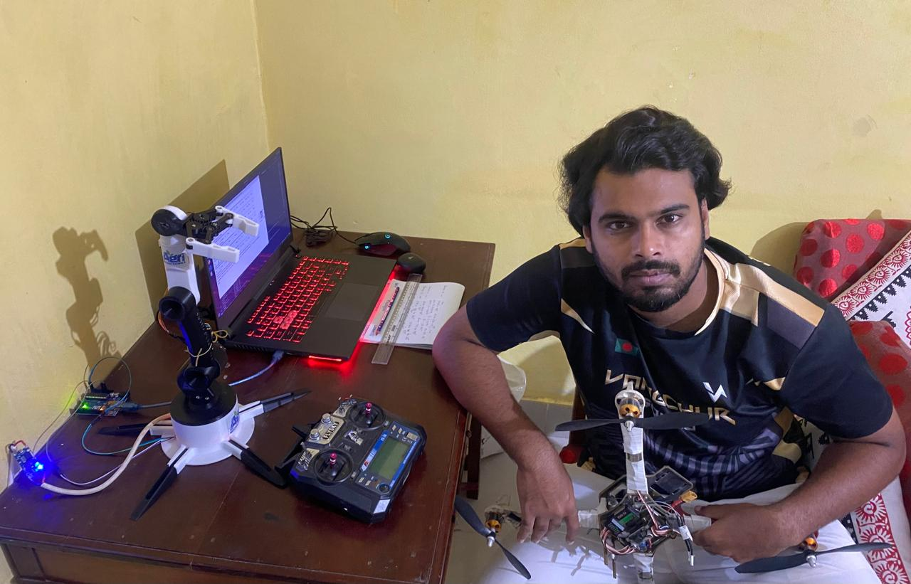

6-DOF Robotic Arm with Real-Time Control and 3D Visualization
Overview:
This project features a 6-degree-of-freedom (DOF) robotic arm designed for precise manipulation tasks, controlled via a custom-built graphical user interface (GUI) developed in Python using PyQt6. The arm, powered by six servo motors, is capable of complex movements in a 3D workspace, suitable for applications like pick-and-place tasks, educational robotics, or small-scale automation. The GUI provides intuitive control, real-time 3D visualization, and automation features, demonstrating a blend of mechanical engineering, control systems, and software development.
Key Features
- Robotic Arm Hardware:
- Structure: The arm consists of six servo motors mounted on a circular base, with link lengths of 20 mm, 80 mm, 120 mm, 90 mm, 32 mm, and 32 mm, culminating in a forked end effector (likely a gripper).
- Motion: The arm achieves 6 DOF through a combination of yaw (servos 0 and 4) and pitch (servos 1, 2, 3, and 5) movements, enabling flexible positioning and orientation in 3D space.
- Reach: The arm’s maximum straight-line length is approximately 374 mm, with an effective reach that varies based on joint angles.
- Design Considerations: Lightweight materials (e.g., aluminum or composite) reduce servo strain, and the arm likely uses standard hobbyist servos with torque ratings of 10–50 N·cm, suitable for light payloads.
- Control Software:
- Platform: Built using Python with PyQt6 for the GUI, interfaced with a microcontroller (e.g., Arduino) via serial communication (PCA9685 servo controller).
- Functionality:
- Manual Control: Users can adjust each servo’s angle (1–179 degrees) using sliders, buttons, or text inputs, with customizable speed and step sizes.
- 3D Visualization: A real-time 3D plot, powered by Matplotlib, displays the arm’s configuration, including joint positions, link lengths, and the gripper’s orientation, with adjustable view angles (elevation and azimuth).
- Automation: The GUI supports recording and playback of servo movements, saving sequences to CSV files, and interpolating motions using the Akima spline method for smooth transitions.
- Inverse Kinematics (IK): A simplified IK solver calculates joint angles to reach a specified 3D target, enhancing precision for tasks requiring specific end-effector positions.
- User Interface: The GUI is split into a control panel (sliders, buttons, and input fields) and a 3D visualization window, with features like loop playback, speed adjustment, and sequence execution.
- Technical Highlights:
- Forward Kinematics: The software computes joint positions using homogeneous transformation matrices, accounting for rotations around the z-axis (yaw) and y-axis (pitch).
- Serial Communication: Commands are sent to the Arduino via a serial port (e.g., /dev/ttyACM0 at 9600 baud), ensuring reliable servo control.
- Error Handling: The system gracefully handles serial connection failures and invalid inputs, providing user feedback via a status bar.
- Modularity: The code is structured for extensibility, with separate methods for servo control, visualization, and automation.
Skills:
- Python: Core programming language for GUI and control logic.
- PyQt6: Used for developing the graphical user interface.
- Matplotlib: For real-time 3D visualization of the arm.
- NumPy & SciPy: For kinematics calculations and spline interpolation.
- Arduino & PCA9685: Hardware interfacing for servo control.
- Robotics Engineering: Design and implementation of 6-DOF arm with forward and inverse kinematics.
Visuals:


.jpeg)
.jpeg)
.jpeg)
.jpeg)
What’s Next?
Future improvements could include adding force feedback, optimizing IK for speed, or integrating computer vision for enhanced automation.